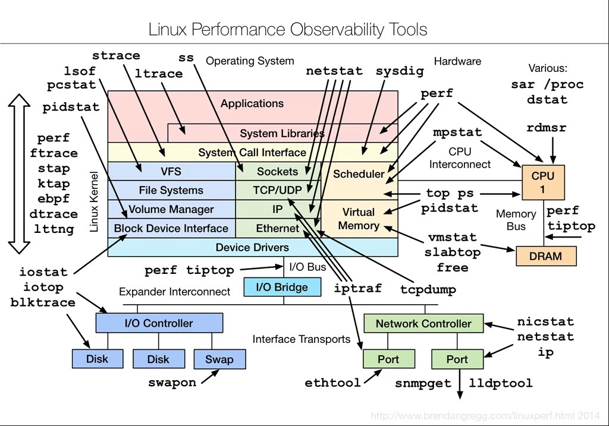

Linux System Performance Troubleshooting
-
Definition:System performance is a measure of the amount of useful work done by a System in a time range. -
OS/CPU Load:The average amount of processes using or waiting for CPU allocation over a period of time.
Usually System Performance issues can be identified by observing slowness in services offered by OS and it mostly happen due to any of the below reasons.
- high CPU Usage
- high Memory Usage
- high Disk IO Usage
- Network Performance Issues
- Software Bugs like memory leaks, Kernel bugs etc.
We will try to break your investigation steps into major bullet points and helps you to find the root causes of the issue.
Tools helpful in your investigation:
Below listed tools are Linux performance monitoring tools, which will help you find out the root cause of the issue,

- top
- mpstat
- sar
- free
- strace
- iotop
- iostat
- netstat
- pidstat
- vmstat
- tcpdump
- iptraf
- blktrace
- lsof
-
type-clip : A very good tool when you have to paste something into virtual consoles.
- recap : To capture historic stats of a server. This tool is almost harmless and captures a lot of information. You can add this tool to your default package list in your environment.
You can install these tools very easily using below command:
yum install -y lsof sysstat iptraf tcpdump procps-ng net-tools strace iotop ethtool blktrace
You can start your investigation by executing small script, which will gather a lot of system stats for you:
bash <(curl -s https://raw.githubusercontent.com/v-nightwolf/nightwolf-cotribution/main/server_stats.sh)
The output of above script will look like this:
############################################
Server Uptime: 1days 6:43:23
Load Average: Current 0.26
Load Average: 15min Average 0.26
#### Printing CPU stats: ####
01:15:26 PM CPU %usr %nice %sys %iowait %irq %soft %steal %guest %gnice %idle
01:15:26 PM all 1.47 0.00 0.48 0.02 0.00 0.12 0.00 0.00 0.00 97.91
###RAM usage###
Free Ram: 569.93MB
Used RAM: 3171.23MB
15% ram left
RAM ALERT: Low!
TOP RAM CONSUMER: /opt/mongodb/mms/jdk/bin/mms-app
RAM Usage (RSS): 1857.43 MB
Total Number of RAM Processes: 2
Total RAM Usage for all /opt/mongodb/mms/jdk/bin/mms-app processes = 2287.56 MB
61.15% used by /opt/mongodb/mms/jdk/bin/mms-app
###CPU usage###
Top Process: /opt/mongodb/mms/jdk/bin/mms-app
CPU % for SINGLE Top Process = 4.2
number of processes this is running: 2
Total CPU % for /opt/mongodb/mms/jdk/bin/mms-app = 4.8
############################################
Troubleshooting Linux perfomance isssue happening due to high CPU Usage
Every performance issue troubleshooting should starts with top command:
and the most useful output of top command is:
top - 16:18:32 up 2:52, 1 user, load average: 0.09, 0.20, 0.22
Tasks: 99 total, 1 running, 98 sleeping, 0 stopped, 0 zombie
%Cpu(s): 3.2 us, 0.0 sy, 0.0 ni, 96.8 id, 0.0 wa, 0.0 hi, 0.0 si, 0.0 st
KiB Mem : 2889532 total, 73328 free, 2707940 used, 108264 buff/cache
KiB Swap: 2097148 total, 1206268 free, 890880 used. 48052 avail Mem
a). 1st line contains: UPTIME and LOAD Averages
current time and length of time since last boot
total number of users logged in.
system load avg over the last 1, 5 and 15 minutes
b). 2nd line contains: TASKs
This line shows total tasks or threads, depending on the state of the Threads-mode toggle.
That total is further classified as: running; sleeping; stopped; zombie
c). 3rd line contains CPU state percentages: This will guide your investigation into a specific direction.
As a default, percentages for these individual categories are displayed.
us, user : time running un-niced user processes
sy, system : time running kernel processes
ni, nice : time running niced user processes
id, idle : time spent in the kernel idle handler
wa, IO-wait : time waiting for I/O completion
hi : time spent servicing hardware interrupts
si : time spent servicing software interrupts
st : time stolen from this vm by the hypervisor
Above stats might guide your investigation into a specific direction. Depending on above CPU stats, you will be able to decide what to check next.
* If only "%us"(time running un-niced user processes) is high that means your application is consuming more
CPU. Now you should deep dive into process stats and process trace. We will discuss this in more detail soon.
* If only "%sy"(time running kernel processes) is high that means you kernel level system call are consuming
the CPU. This usually happens when there is a bug in kernel packages.
* If "%ni"(time running niced user processes) is high that means the prioritized processes are consuming
the CPU. You should try to depriritize the process.
* If "%id"(time spent in the kernel idle handler) is high that means your system is ideal and is not doing
anything.
* If "%wa"(time waiting for I/O completion) is high that means your most CPU time is being spent on waiting for
I/O completion. These waits can be due to Disk slowness or Network slowness.
* If "%hi"(time spent servicing hardware interrupts) is high that means CPU is very busy in servicing the
Hardware interrupts. Hardware interrupt will cause CPU to stop its current processing and go handle the
Hardware interrupt. Ususally hardware interrupts was generated by physical devices like disk, NIC,computer
peripherals. You should check the hardwares attached to the machine and see if they are working fine.
* If "%si"(time spent servicing software interrupts) is high that CPU is busy serving Software interrupts.
Usually Software interrupt occure at kernel level.
* "%st"(time stolen from this vm by the hypervisor) means that virtual CPU is being spent waiting for the
Hypervisor to allocate CPU to virtual machine. This stat is only applicable to Virtual machines.
If %us is high, that mean some process in user space is consuming the CPU. Next step would be to deep dive into process stats:
1. First identify the process consuming high CPU. This can be identified using "top" command.
2. Once you have identified the process, note down its process id(pid).
3. Try tracing the process using stace command. This will throw a lot output onto the screen.
starce -t -p PID_OF_PROCESS => This will print wall clock time of each system call.
4. Please check if process is getting stuck at any system call and note down system call and the resource system
call is using.
5. If system call is waiting for a File related I/O, then next step is to check file system call is waiting for.
6. Go to /proc/{$PID_OF_PROCESS}/
Troubleshooting Linux performance issue happening due to high Memory Usage
d). 4th and 5th line in 'top' output contains Memory stats in Kibibytes(kib).
There is slight difference between kilibyte and kibibyte i.e 1 kB = 1000 bytes. 1 KiB = 1024 bytes.
As a default, line 4 reflects physical memory, classified as:
total, free, used and buff/cache
line 5 reflects mostly virtual memory(swap), classified as:
total, free, used and avail
total: Total size of memory available to system.
free: Size of memory which in un-utilized.
used: Size of memory currently utilized by processes+System.
buff/cache: Size of memory utilized by system for kernel buffers(i.e. buff) and page cache and slabs(i.e. cache)
High memory utilization
Excessive memory use on the system can lead to poor performance due to systems need to move data between
the RAM memory and swap storage, memory must be cleared to make room for new allocations, or there is little
space available for caching data from the file system. Below is sample output from free command.
# free
total used free shared buff/cache available
Mem: 32877556 3236036 20996296 11316 8645224 29120756
Swap: 1953788 5888 1947900
1. Total Mem: Total amount of memory allocated to the server.
2. Used Mem: Total amount of memory currently being utilized by system and applications.
3. Free Mem: Memory amount currently free on system.
4. Shared Mem: Amount of memory used by tmpfs and shared memory betweendifferent processes.
5. buff/cache Mem: Memory used by OS buffer and caching, which is dropped by OS when new memory request comes.
6. Available Mem: Free Mem + buff/cahce Mem.
Linux support virtual memory, which allows applications to use more memory than physical RAM installed on
the machine. Linux will use the swap partitions to store the data that is not currently being used and
automatically move data between RAM memory and disk drives as required. However, it is very slow to move
data between physical RAM and disk.
what is Swap?
The primary function of Swap space is to utilize disk space from a separate, dedicated partition on the main
storage for RAM when the physical main memory fills up and more space is needed.
What is vm.swappiness
vm.swappiness is a value which helps OS to decide when to start using swap. The default value of vm.swappiness
is 60. vm.swappiness represents the percentage of the free memory before activating swap. The lower the value
of vm.swappiness, the less swapping is used and the more memory pages are kept in physical memory.
In simpler words, the value of /proc/sys/vm/swappiness dictates how 'aggressively' the Linux kernel will swap
memory pages [during memory reclaim].
The 'swappiness' value can be between 0 and 100.
For high Memory centric applications like Databases, Please try to keep the vm.swappiness as low as possible,
somewhere between 5 to 10.
A value of 0 does not prevent swap. In fact, the kernel will initiate swap when the amount of free and
file-backed pages is less than the high water mark in a zone irrespective of the swappiness value.
If no swap area(s) exists then swappiness is not applicable.
Main Memory Architecture:
- To expand on main memory, Memory is divided into small-small chunks of memory called Memory Pages. The default
size of memory pages on most processors is 4KB, and although some processors use 8KB, 16KB, or 64KB as the
default page size.
=> Fixed size block in RAM (Physical Address Space) - Frame
=> Fixed size block created by CPU (Logical Address Space) - Page
- Main memory is divided by two general categories: Page Cache, where the kernel stores page-sized chunks of
files for faster loading; and Anonymous Memory, which is mainly comprised from content not backed by storage,
such as program stack and temporary variables.
- The kernel uses a memory management program that detects blocks (AKA: pages) of anonymous memory, in which
the contents have not been used recently. The memory management program swaps out enough of these relatively
infrequently used pages of anonymous memory to a special partition on the main storage specifically designated
for paging or swapping. This frees up RAM and makes room for more data.
- Those pages of anonymous memory that were swapped out to the Swap partition are tracked by the kernel memory
management code and can be paged back into RAM if they are needed (AKA: Swapped-in).
=> PAGE TABLE: A table that has mapping of addresses in RAM of pages and a validation bit which tells either
the page is present on that address or not.
Linux memory management:
- When a process in Memory tries to access a file, the Memory Management program check if that File already
exists in Memory and what memory pages are mapped to the requested file. For Page faults are raised.
What are Page Faults:
It is a condition when a process in execution can not find memory pages for a file in Virtual memory space.
What are Major page faults ?
* If page mapping for requested file is not found in Virtual Memory space, a "Major page Fault" is raised.
This means requested file needs to be bring into memory from either disk or Swap. Bringing file to memory
from Disk or Swap is costs heavy penalty in terms of cpu cycles occurred due to swap-in, swap-out.
=> "SWAP-IN": It is a mthod of moving a file/pages from Swap to main Memory.
=> "SWAP-OUT": It is a method of moving file/pages from Memory to Swap.
Major page faults, Swap-IN and Swap-OUT are cpu cycle costly processes. If there is high swap-in and swap-out
happening on a server/machine, which clearly means OS is mostly busy in just moving the files/pages around
instead of actually serving the actual proccesses. This will degrade the system performance.
What are Minor page faults ?
* If requested file page mapping is found in Virtual memory, but pages are mapped/used by some other process,
a "Minor page fault" will be raised. Linux OS then will mark those pages as shared and will allow both old
and new processes to share those pages.
What is dirty page ?
* When memory pages mapped to a file are edited by some process, those edited pages are called dirty pages
until they are written to disk. In simpler words, Edited and uncommied memory pages are called dirty pages.
Dirty pages are saved in page cache until they are written/commited to disk.
* Dirty pages are periodically transferred (as well as with the system calls sync or fsync) to the underlying
storage device.
* Up to and including the 2.6.31 version of the Linux kernel, the pdflush threads ensured that dirty pages were
periodically written to the underlying storage device.
* Since pdflush had several performance disadvantages, Jens Axboe developed a new, more effective writeback
mechanism for Linux Kernel version 2.6.32. This approach provides threads for each device attached to a server.
These threads are managed by a service called "flushd".
Memory issue related Investigation:
1. Review the output of free command:
$ free -m
total used free shared buff/cache available
Mem: 32106 3130 20774 11 8201 28448
Swap: 1907 13 1894
2. Review the SAR command output for continuously heavy Swap in/out activity. This is represented by high values
of "pswpin" / "pswpout"
Example of sar output :
$ sar -W
12:00:00 AM pswpin/s pswpout/s
05:20:00 AM 0.21 0.00
05:30:00 AM 0.08 0.85
05:40:00 AM 0.47 0.00
05:50:00 AM 3.58 1.71
06:00:00 AM 2.48 0.00
06:10:00 AM 39.91 7.17 <<<<----- High swap-in and swap-out detected
06:20:00 AM 0.21 2.72
06:30:00 AM 13.30 1.04
Or you can check these stats using below command, the si/so section to check swapin/swapout.:
$ vmstat
procs -----------memory---------- ---swap-- -----io---- -system-- ------cpu-----
r b swpd free buff cache si so bi bo in cs us sy id wa st
1 0 62208 21707724 694072 7281500 0 0 1 29 1 1 1 1 98 0 0
3. Check the number of major page fault happening on the server using below sar command. This suggests that CPU
is mostly busy fetching files from disk/swap rather than serving actual processes.
$ sar -B
05:20:10 PM pgpgin/s pgpgout/s fault/s majflt/s pgfree/s pgscank/s pgscand/s pgsteal/s %vmeff
05:30:10 PM 0.00 232.94 1502.78 0.00 1296.10 0.00 0.00 0.00 0.00
05:40:10 PM 0.00 624.97 123624.06 123035 682.68 0.00 0.00 0.00 0.00 <<<--- High major faults
05:50:10 PM 0.00 130.77 229.73 121873 238.82 0.00 0.00 0.00 0.00 <<<--- High major faults
06:00:08 PM 0.05 361.87 303.89 0.00 367.08 0.00 0.00 0.00 0.00
4. Check the kbdirty value in below command output.
=> kbdirty: Amount of memory in kilobytes waiting to get written back to the disk. If this value is very high,
It means either there is something wrong with pdflush/flushd service or CPU is unable to write
changed pages(dirty pages) back to disk with expected speed. Now you will have to check the disk
performance which we will discuss in detail in our next topic.
05:20:10 PM kbmemfree kbavail kbmemused %memused kbbuffers kbcached kbcommit %commit kbactive kbinact kbdirty
05:30:10 PM 21267192 29123732 3075004 9.35 716156 7213396 9264428 26.60 4503104 6166304 252
05:40:10 PM 21286860 29144116 3054432 9.29 716524 7213628 9359668 26.87 4481716 6173528 772
05:50:10 PM 21279032 29136796 3061676 9.31 716684 7213984 9265528 26.60 4506340 6178268 436
06:00:08 PM 21266616 29125040 3073608 9.35 717036 7214472 9254568 26.57 4508936 6169368 1368
5. Tune vm.swappiness kernel parameter:
Depending on your System's usage and high swap-in and swap-outs on your system, you can lower the value of
vm.swappiness kernel parameter accordingly.
For high Memory centric applications like Databases, Please try to keep the vm.swappiness as low as possible,
somewhere between 5 to 10.
$ cat /proc/sys/vm/swappiness
60
=> open /etc/sysctl.conf as root. Then, change or add this line to the file:
vm.swappiness = 10
=> for changing the swappiness value temporarily try this command:
$ echo 50 > /proc/sys/vm/swappiness
A value of 0 does not prevent swap. In fact, the kernel will initiate swap when the amount of free and
file-backed pages is less than the high water mark in a zone irrespective of the swappiness value.
Troubleshooting Linux performance issue happening due to high Disk IO Usage
Troubleshooting Linux OS network performance Issues
You may also refer to below articles:
- Linux Interview Questions for Freshers
- Linux Interview Questions for Freshers - 2
- Linux Interview Questions for Freshers and Experienced - L1
- Linux Interview Questions for Experienced Linux Admins - L2
- Advanced Linux Interview Questions for Experienced Admins - L3
- Shell-Scripting interview questions
- OS Network Interview Questions
- AWS Certified SysOps Administrator - Questions and Answers-1st
- AWS Certified SysOps Administrator - Questions and Answers-2nd
- AWS interview questions for experienced professionals - 1st
- AWS interview questions for experienced professionals - 2nd
- Ansible interview questions
- Kubernetes interview questions
- DevOps Interview Questions for Freshers and Experienced
- DevOps Interview Questions for Freshers and Experienced - 2
- GIT Interview Questions for DevOps Roles
- Jenkins Interview Questions for Experienced DevOps Engineer
- Terraform Interview Questions for Experienced DevOps Engineer
- Terraform Interview Questions for Experienced DevOps Engineer - 2
- Terraform Interview Questions for Experienced DevOps Engineer - 3
- JAVA Interview Questions
- JAVA Interview Questions - 2
- Manual Testing Interview Questions for QA Engineers/Testers
- DBMS Interview Questions
- Managerial interview questions